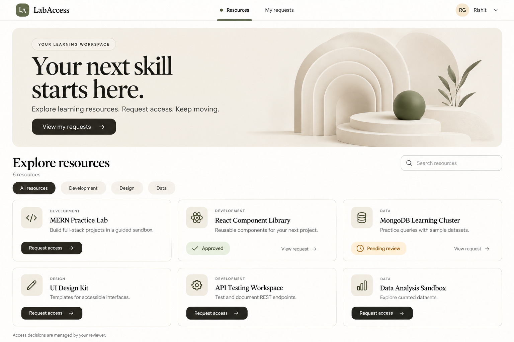
Resource catalog
Primary theme reference. Learner catalog with hero, three-column cards, and current request status. Reviewer variant reuses the catalog but hides learner-only request controls; show Review queue instead of My requests and adapt the hero link. Search/category controls remain optional.
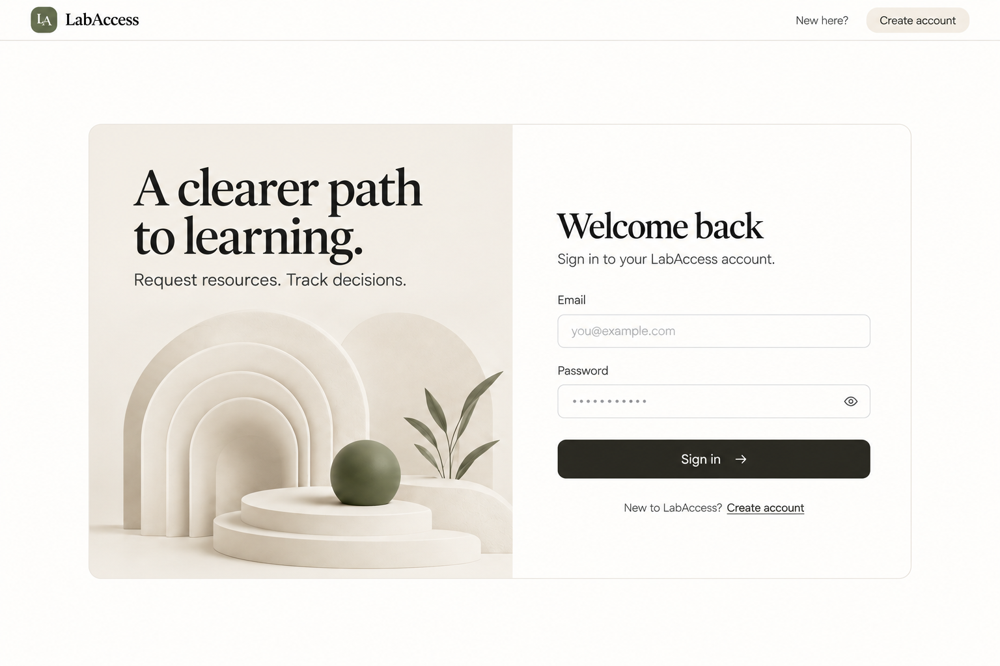
Login
Public login; no authenticated navigation, role selector, or social providers. Use the same AuthLayout as registration.
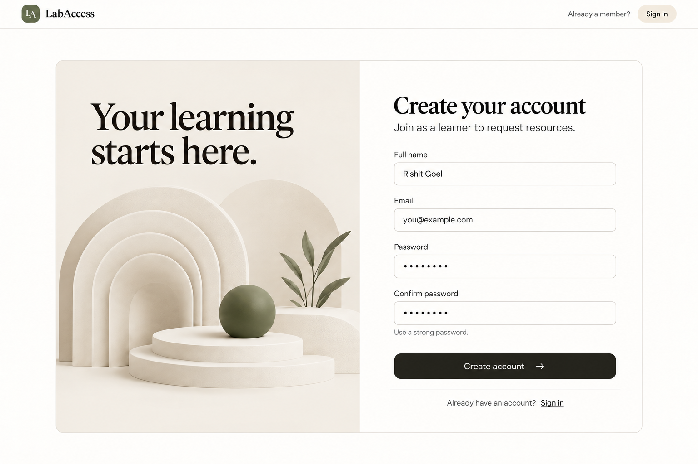
Registration
Public learner signup; no role selector. Confirm password is client-side confirmation only; do not add an unnecessary persisted field.
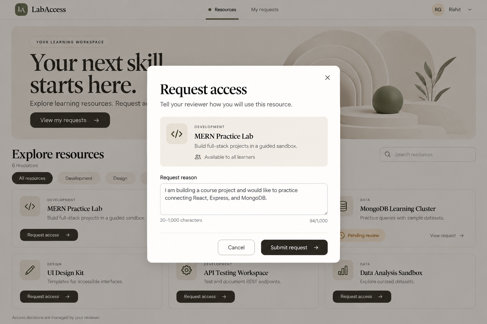
Request access dialog
Request form overlay on the catalog. Preserve reason on errors, disable during submit, and calculate the actual character count. Background content is inert while the dialog is open.
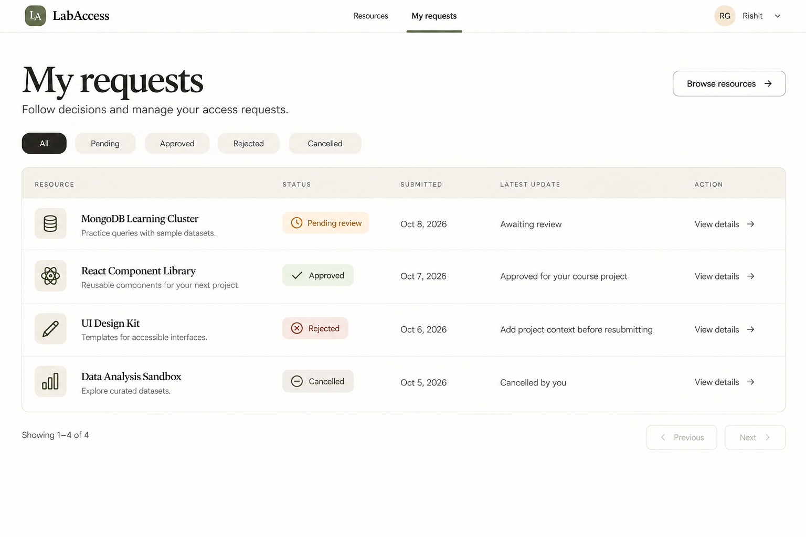
My requests
Learner-only request list with status filters and pagination. View details is the row action. Use a compact reusable PageHeading even if the generated image exaggerates heading size.
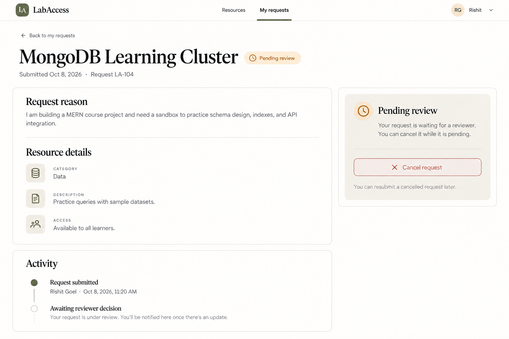
Learner request details — pending
Owner's pending details: context/history and cancel action. Show confirmation before cancellation. Awaiting review is a current-state indicator, not a persisted audit event. The copy does not imply email, push notifications, or real-time delivery.
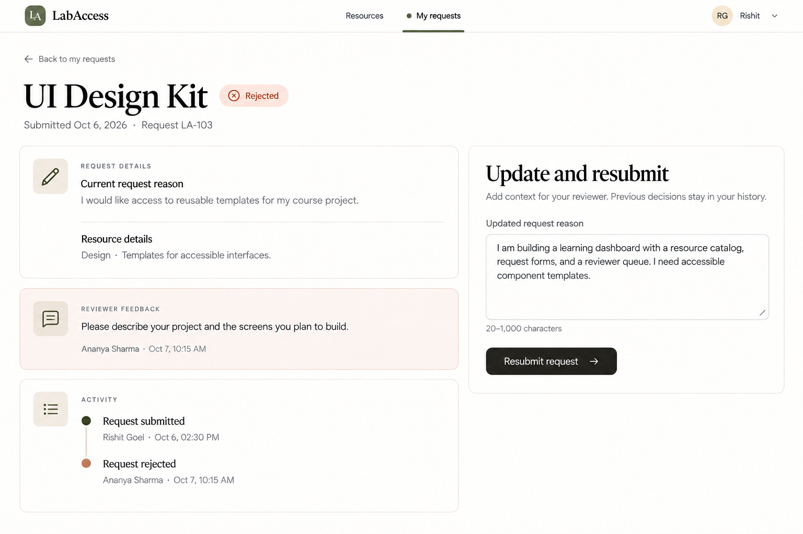
Learner request details — rejected/resubmit
Rejected request with reviewer feedback and an updated reason form. Reuse the same page/component for cancelled requests using the Cancelled badge and cancellation context; omit reviewer-feedback content when none exists.
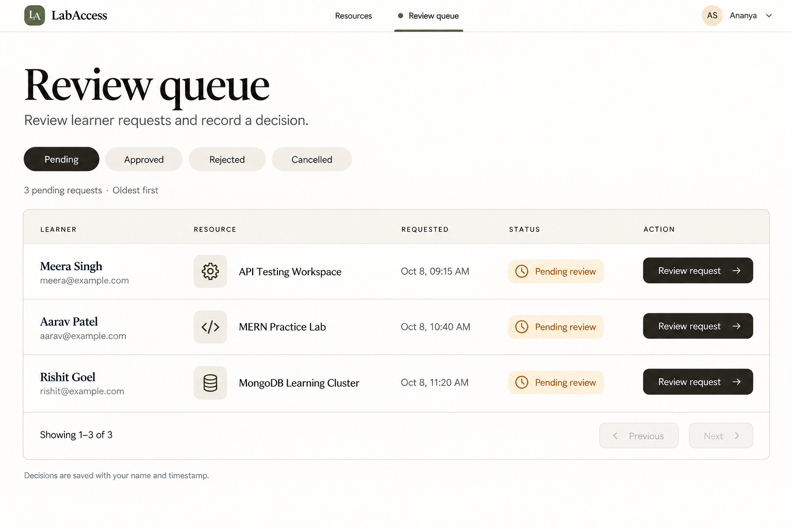
Reviewer queue
Reviewer-only queue, pending oldest first. No inline approvals or learner submission buttons. Reuse list/filter/pagination primitives rather than copying the learner table's business logic.
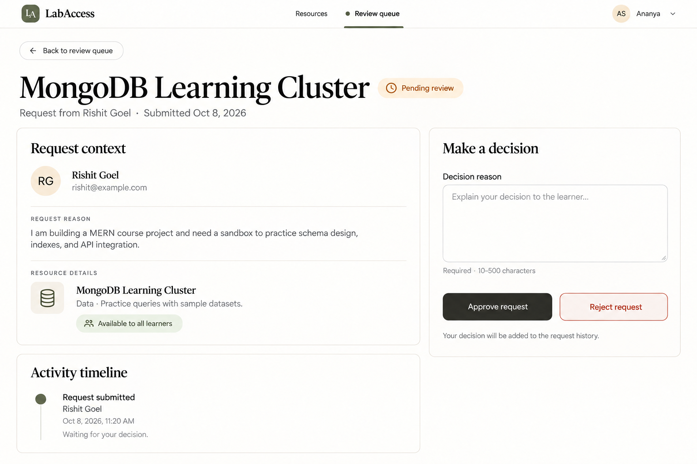
Reviewer request details — decision
Reviewer-only pending detail: learner context, history, decision reason, approve/reject. Require confirmation and valid reason. After a decision, hide write controls and show read-only decision context.
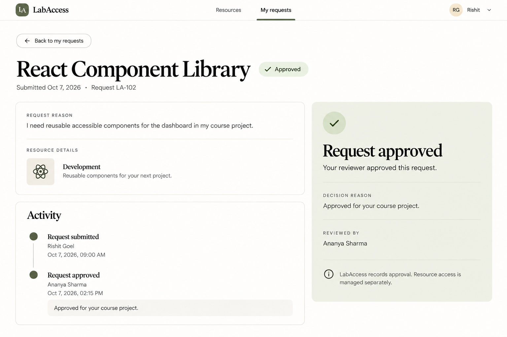
Learner request details — approved
Terminal approval, readable reason/history, no cancellation/resubmission or launch-resource button. Approval records a decision and does not provision access.
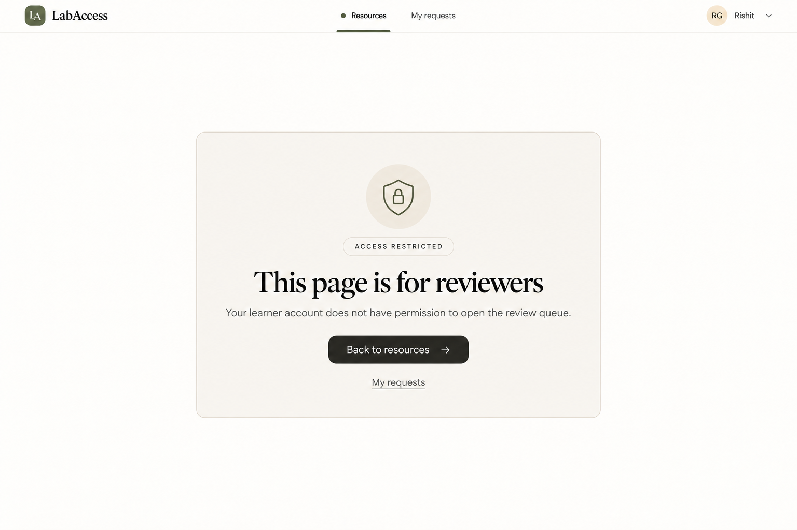
Access denied
Role-forbidden route only. Never use this screen to reveal another learner's ownership or request existence; unauthorized request IDs use the neutral not-found response.
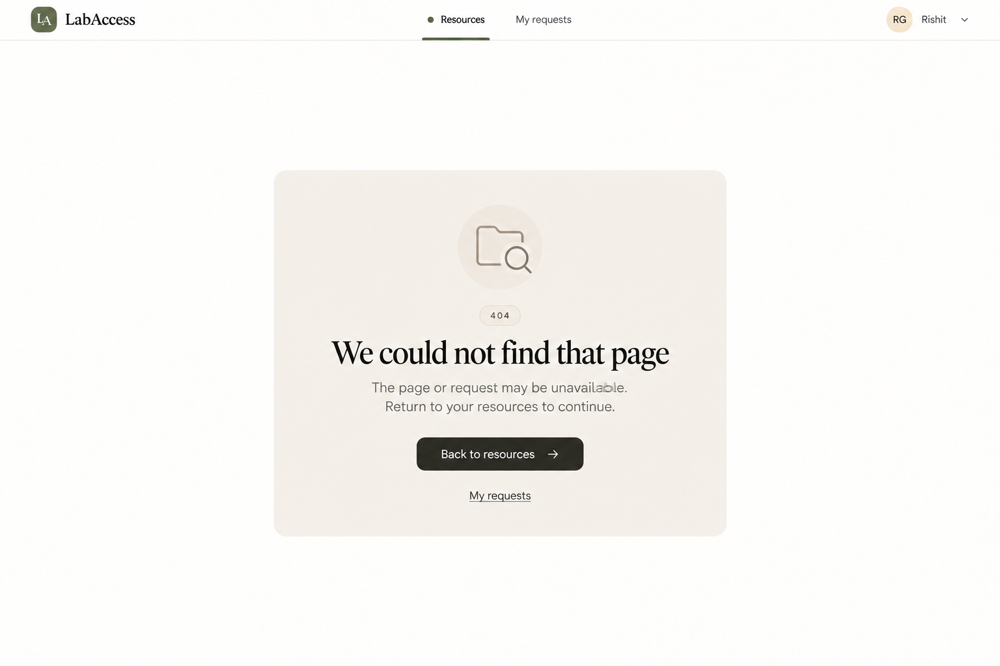
Page or request not found
Unknown route or missing/inaccessible request. Signed-out variant uses the public header and a Sign in recovery action instead of assuming an authenticated profile.